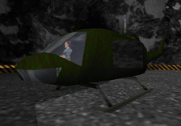
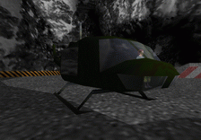
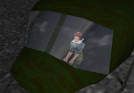

|
.
| Goldeneye
Version Beta : Vehicules |
| Grace
à l'Action Replay, on peut faire apparaitre divers Véhicules
qui ne figurent pas dans la Version Finale. Et y en a un bon Paquet
!! Il vous suffit de rentrer un Code, et le Vehicule apparaitra à
la Place du Camion Vert du Barrage ! Voilà le Code de Base
: 801E8D37
00YY et 801E8D39 00XX.
Il vous suffit de remplacer les XX et les YY par les Chiffres que
je donne ! |
| Vehicules
: Helicoptere de Natalya (YY = 28 / XX = 1A) |
| Il
n'est pas Noir comme à la Fin de Cradle, mais Vert, et on peut
voir Natalya dedans ! |


